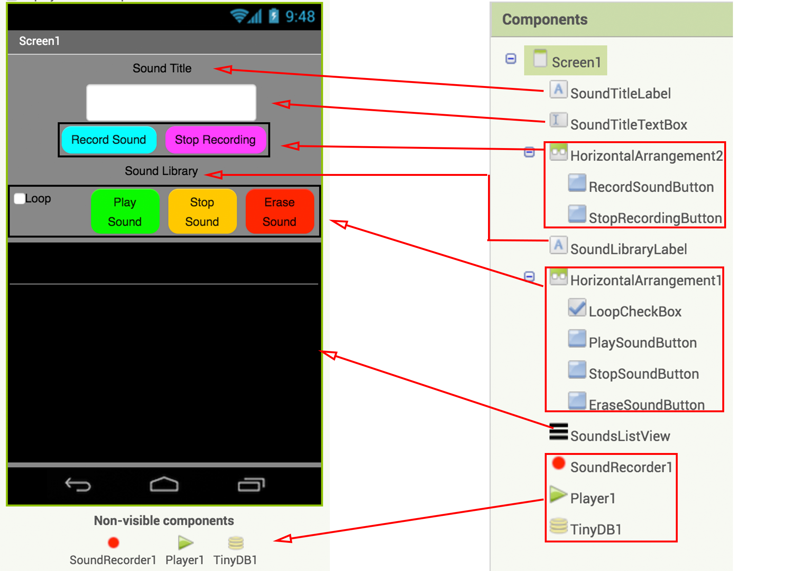
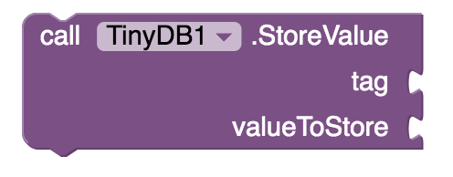
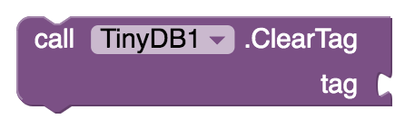
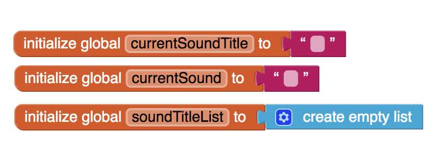
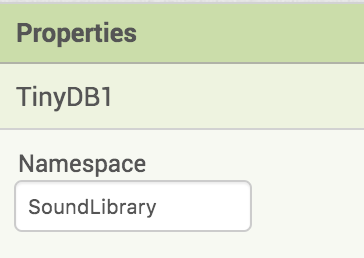

The Challenge
Connect Your App
SoundLibrary Tutorial (Level: Intermediate)
Introduction

In this project you will create your own app to capture sounds from daily life and store them in your very own Sound Library on your mobile device. Be it for the purpose of capturing soothing sounds like in ASMR to calm yourself at the end of a long day or for capturing cool natural rhythms to generate your own funky music, we invite you to take on this challenge merging technology and the sonic arts.
Introduction
As the sounds in your Sound Library need to be preserved even when you close the app, you will learn how to access the long-term data storage capability of your mobile device using the TinyDB component of MIT App Inventor.
The User Interface
The user interface has been created for you in the starter project. Examine the components and their layout in the Viewer and also examine the component hierarchy and the naming in the Components tab. Pay special attention to non-visible components. Feel free to change the properties of the components to get the look and feel you want for your app. For example, change the color and shape of the buttons. However, as the coding section of the tutorial will make references to them, do not alter the names of the components.
Test your App
If you chose to do so, when you are done revising the look and feel of the user interface, this may be a good time to test your app using the AI Companion via the Connect menu.

Introduction to TinyDB
The TinyDB component stores data locally on the user's mobile phone or tablet. TinyDB can only be accessed by one user on a single device. In other projects you will learn about CloudDB which allows multiple users to store, access and modify data in the Cloud.
Introduction to TinyDB
We will use TinyDB to store sounds recorded by the user on the local device using the sound titles as tags.

Here are some of the blocks in the TinyDB drawer.
The following block allows you to store a value in the local memory of your mobile device using a unique tag, very much like how you would assign a value to a uniquely named variable. One important difference to note however is that while a variable can hold a value only until the app quits, a value stored in the TinyDB will be available to the user each time the app is run.
The following block allows you to retrieve a value stored in the local memory of your mobile device using its tag. Note that if there is no such tag, by default an empty string is set to be returned, but you can choose to return some other value instead by replacing the empty string block.

The following block will clear the content in the memory associated with a given tag.
The following block will return a list of all tags stored in the TinyDB.

The following block will clear the entire data store in the TinyDB.

Here is some more advanced information you can read about TinyDB.
Blocks Editor
Now you will give functionality to the user interface (UI). Switch to the Blocks editor.

Initializations
In this project you will need several variables to keep track of the data you would like to store and process. The first variable, currentSoundTitle, is used to store the title of the sound currently selected by the user and the second variable, currentSound, stores the reference to the actual sound file itself. The third variable, soundTitleList, is used to store the list containing the titles of all the sounds in the Sound Library. Create and initialize these variables as shown.
Initializations
When Screen1 is initialized you will need to
- get all the tags (*) from TinyDB which is a list of all the titles of the sounds already stored in the Sound Library and store these in the variable soundTitleList;
- have the SoundsListView display these sound titles so that user knows what sounds have already been recorded and stored in the Sound Library.
Do this coding on your own. If you get stuck and would like some hints, click on the hint button below.
Note (*): To avoid accidentally getting tags associated with other App Inventor projects the Namespace property of TinyDB has been set for you to "SoundLibrary".
Recording Sounds
Give functionality to the RecordSoundButton and StopRecordingButton.
Recording Sounds
Now code the behavior for the SoundRecorder1. After the SoundRecorder1 has recorded a sound:
- check that the user has actually entered a title for the sound;
- if a title has been entered for the sound, store that sound in the TinyDB using the title as its tag;
- if the title entered is new and has not been used before, add it to the soundTitleList;
- update the SoundsListsView to display the latest sound titles;
- clear the SoundTitleTextBox so that it is ready for the next input to be entered by the user.
Do this coding on your own. If you get stuck and would like some hints, click on the hint button below.
Retrieving Sounds
The work you have done so far was about recording properly labeled sounds into the Sound Library. Now you will learn how to retrieve sounds from the Sound Library, play them, loop them and erase them.
When the user makes a selection from the SoundListView where the sound titles are displayed
- set the currentSoundTitle variable to the user's selection;
- set the currentSound variable to the value stored in the TinyDB under the tag named by this selection.
Note that the ListView component allows a list of text elements to be displayed on your mobile device's screen and when an element is selected by the user, the SelectionIndex is the index of the selected element in that list. When no item is selected the SelectionIndex is 0.
Do this coding on your own. If you get stuck and would like some hints, click on the hint button below.
Playing, Looping and Stopping Sounds
Now code the behavior for the PlaySoundButton. When the button is clicked,
- set Player1 to loop or not depending whether the LoopCheckBox has been checked;
- set the source of Player1 to the sound file referenced in the variable currentSound;
- start Player1.
Do this coding on your own. If you get stuck and would like some hints, click on the hint button below.
StopSoundButton should simply stop Player1.
Erasing Sounds
Finally, give functionality to the EraseSoundButton. When the button is clicked,
- check that a sound title selection has indeed been made in the SoundsListView, i.e. SelectionIndex is not zero;
- if a selection has been made, erase the sound associated with that title in the TinyDB;
- remove the sound title from the list stored in the variable soundTitleList;
- revise the SoundsListView to reflect the changes;
- re-initialize the variables currentSoundTitle, currentSound to empty strings
- set the SoundListView SelectionIndex to zero, indicating that no selection has been made.
Remember that the ListView component allows a list of text elements to be displayed on your mobile device's screen and when an element is selected by the user, the SelectionIndex is the index of the selected element in that list. When no item is selected the SelectionIndex is 0.
Do this coding on your own. If you get stuck and would like some hints, click on the hint button below.

Test your App!
You are done! Test your app thoroughly.
- make sure that you can capture sounds, give them titles and save them in the mobile device memory;
- make sure that you can play any sound in your Sound Library, looping if desired;
- make sure that you can erase any sound from your Sound Library;
- test that the sounds stored in your Sound Library are accessible after turning the app off and restarting.
Expand Your App
- Have the app warn the user with a notifier if they are about to override an existing sound file by reusing an existing sound title.
- Have the app alert and double check with the user with a notifier when they are about to erase a sound from the Sound Library.
- Allow the user to enter information about the sound other than the title (such as date recorded, location info, background information, credits etc.)
- Create functionality so that you can simultaneously play any of number of sounds stored in your Sound Library to superimpose sounds to get cool sonic effects.
- Learn about the CloudDB component of App Inventor to create a Sound Library app that multiple users can use together to contribute and access sounds.
- Your original ideas here. What else can you imagine?
Share Your App
About Youth Mobile Power
A lot of us spend all day on our phones, hooked on our favorite apps. We keep typing and swiping, even when we know the risks phones can pose to our attention, privacy, and even our safety. But the computers in our pockets also create untapped opportunities for young people to learn, connect and transform our communities.
That’s why MIT and YR Media teamed up to launch the Youth Mobile Power series. YR teens produce stories highlighting how young people use their phones in surprising and powerful ways. Meanwhile, the team at MIT is continually enhancing MIT App Inventor to make it possible for users like you to create apps like the ones featured in YR’s reporting.
Essentially: get inspired by the story, get busy making your own app!

The YR + MIT collaboration is supported in part by the National Science Foundation. This material is based upon work supported by the National Science Foundation under Grant No. (1614239). Any opinions, findings and conclusions or recommendations expressed in this material are those of the author(s) and do not necessarily reflect the views of the National Science Foundation.
Check out more apps and interactive news content created by YR here.